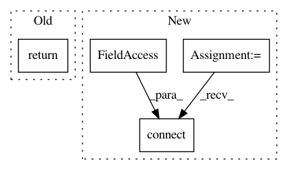

8d9892db78fb01d2f5b81102756a5bc7ab6ef957,ilastik/applets/networkClassification/nnClassGui.py,NNClassGui,initViewerControlUi,#NNClassGui#,85
Before Change
In our case, the viewer control GUI consists mainly of a layer list.
return 0
def setupLayers(self):
After Change
checkbox.setChecked( not checkbox.isChecked() )
self._viewerControlUi.checkShowPredictions.nextCheckState = partial(nextCheckState, self._viewerControlUi.checkShowPredictions)
self._viewerControlUi.checkShowPredictions.clicked.connect( self.handleShowPredictionsClicked )
model = self.editor.layerStack
self._viewerControlUi.viewerControls.setupConnections(model)
In pattern: SUPERPATTERN
Frequency: 4
Non-data size: 4
Instances
Project Name: ilastik/ilastik
Commit Name: 8d9892db78fb01d2f5b81102756a5bc7ab6ef957
Time: 2018-04-25
Author: jonas.massa@iwr.uni-heidelberg.de
File Name: ilastik/applets/networkClassification/nnClassGui.py
Class Name: NNClassGui
Method Name: initViewerControlUi
Project Name: ilastik/ilastik
Commit Name: 3abb7be9b8e3dd72339d420c7ad57da7b7b25f81
Time: 2018-04-25
Author: jonas.massa@iwr.uni-heidelberg.de
File Name: ilastik/applets/networkClassification/nnClassGui.py
Class Name: NNClassGui
Method Name: menus
Project Name: NifTK/NiftyNet
Commit Name: b263ab3a2904ee85910623cd770eb6763d81e4a9
Time: 2018-04-24
Author: wenqi.li@ucl.ac.uk
File Name: niftynet/engine/event_tensorboard.py
Class Name: TensorBoardLogger
Method Name: __init__
Project Name: NifTK/NiftyNet
Commit Name: 63793169f8952f3cab5b1dc63a99952c958271e2
Time: 2018-05-25
Author: wenqi.li@ucl.ac.uk
File Name: niftynet/engine/handler_tensorboard.py
Class Name: TensorBoardLogger
Method Name: __init__